The ADC module contains two 12-bit successive approximation analog-to-digital converters with a maximum input clock of 30 MHz. It supports 16 external channels and 2 internal signal sources as sampling sources. It can perform single conversion, continuous conversion, automatic scan mode between channels, discontinuous mode, external trigger mode, and other functions on channels. The analog watchdog function can be used to monitor whether the channel voltage is within the threshold range.
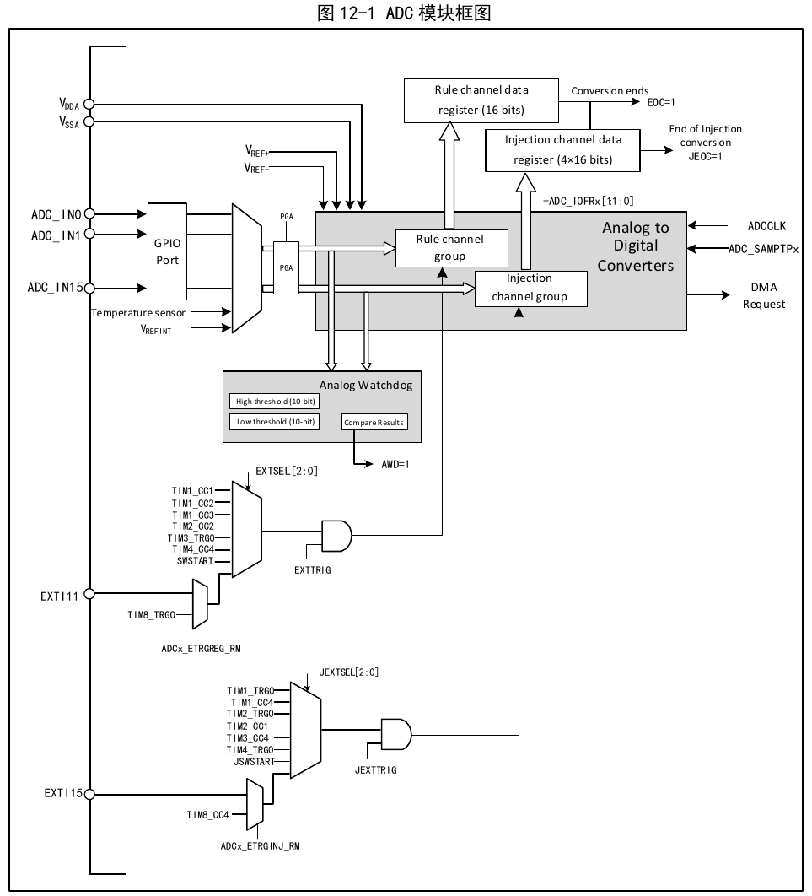
1) Module power-up
The ADON bit in the ADCx_CTLR2 register is set to 1 to power up the ADC module. When the ADC module transitions from power-down mode (ADON=0) to power-up state (ADON=1), a delay of tSTAB is required for module stabilization. After that, writing ADON to 1 again serves as the software start signal to initiate ADC conversion. Clearing the ADON bit to 0 terminates the current conversion and puts the ADC module into power-down mode, in which state the ADC consumes almost no power.
2) Sampling clock
The register operations of the module are based on the PCLK2 (PB2 bus) clock. Its conversion unit clock reference ADCCLK is synchronized with PCLK2 and is configured by the ADCPRE[1:0] field in the RCC_CFGR0 register, with a maximum of 30 MHz.
3) Channel configuration
The ADC module provides 18 channel sampling sources, including 16 external channels and 2 internal channels. They can be configured into two conversion groups: the regular group and the injected group. This enables group conversions consisting of a series of conversions on any number of channels in any order.
Conversion groups:
The 2 internal channels:
4) Calibration
Writing the RSTCAL bit in the ADCx_CTLR2 register to 1 initializes the calibration registers; wait for RSTCAL to be hardware-cleared to 0, indicating initialization is complete. Set the CAL bit to start the calibration function; once calibration is complete, the hardware automatically clears the CAL bit. Offset calibration is performed. After that, normal conversion functions can begin, with the offset value added after each ADC conversion. It is recommended to perform an ADC calibration once when the ADC module is powered up.
5) Programmable sampling time
The ADC uses a number of ADCCLK cycles to sample the input voltage. The number of sampling cycles for a channel can be changed via the SMPx[2:0] bits in the ADCx_SAMPTR1 and ADCx_SAMPTR2 registers. Each channel can be sampled using a different time individually.
The total conversion time is calculated as follows:
TCONV = Sampling time + 12.5 × TADCCLK
The sampling time is determined by SMPx[2:0].
The ADC regular channel conversion supports the DMA function. The regular channel conversion value is stored in a single data register, ADCx_RDATAR. To prevent the data in the ADCx_RDATAR register from not being read in time during continuous conversion of multiple regular channels, the ADC DMA function can be enabled. The hardware generates a DMA request at the end of the regular channel conversion (EOC set) and transfers the converted data from the ADCx_RDATAR register to the user-specified destination address.
After configuring the channel of the DMA controller module, write the DMA bit in the ADCx_CTLR2 register to 1 to enable the ADC DMA function.
6) Data alignment
The ALIGN bit in the ADCx_CTLR2 register selects the storage alignment mode of the ADC converted data. The 12-bit data supports left-aligned and right-aligned modes.
The data register of the regular group channel, ADCx_RDATAR, stores the actual converted 12-bit digital value; while the data register of the injected group channel, ADCx_IDATARx, stores the value written after subtracting the offset defined in the ADCx_IOFRx register from the actual converted data. Since positive and negative values can occur, there is a sign bit (SIGNB).
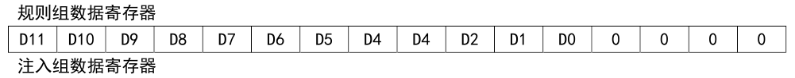
Regular group data register: D11 D10 D9 D8 D7 D6 D5 D4 D3 D2 D1 D0 0 0 0 0
Injected group data register: SIGNB D11 D10 D9 D8 D7 D6 D5 D4 D3 D2 D1 D0 0 0 0
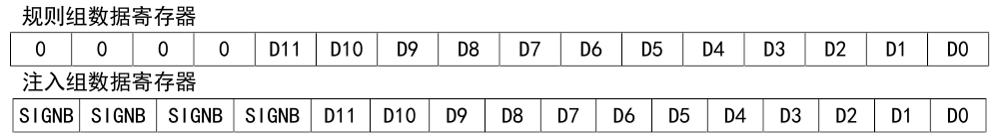
Regular group data register: 0 0 0 0 D11 D10 D9 D8 D7 D6 D5 D4 D3 D2 D1 D0
Injected group data register: SIGNB SIGNB SIGNB SIGNB D11 D10 D9 D8 D7 D6 D5 D4 D3 D2 D1 D0
The start event of an ADC conversion can be triggered by external events. If the EXTTRIG or JEXTTRIG bit in the ADCx_CTLR2 register is set, the conversion of the regular group or injected group channel can be triggered by an external event, respectively. In this case, the EXTSEL[2:0] and JEXTSEL[2:0] bit configurations determine the external event sources for the regular group and injected group.
| EXTSEL[2:0] | Trigger source | Type |
|---|---|---|
| 000 | Timer 1 CC1 event | Internal signal from on-chip timer |
| 001 | Timer 1 CC2 event | |
| 010 | Timer 1 CC3 event | |
| 011 | Timer 2 CC2 event | |
| 100 | Timer 3 TRGO event | |
| 101 | Timer 4 CC4 event | |
| 110 | EXTI line 11 / TIM8_TRGO | External pin / internal timer signal |
| 111 | SWSTART bit set to 1 software trigger | Software control bit |
| JEXTSEL[2:0] | Trigger source | Type |
|---|---|---|
| 000 | Timer 1 TRGO event | Internal signal from on-chip timer |
| 001 | Timer 1 CC4 event | |
| 010 | Timer 2 TRGO event | |
| 011 | Timer 2 CC1 event | |
| 100 | Timer 3 CC4 event | |
| 101 | Timer 4 TRGO event | |
| 110 | EXTI line 15 / TIM8_CC4 | External pin / internal timer signal |
| 111 | JSWSTART bit set to 1 software trigger | Software control bit |
| CONT | SCAN | DISCEN/JDISCEN | IAUTO | Start event | ADC conversion mode |
|---|---|---|---|---|---|
| 0 | 0 | 0 | 0 | ADON bit set to 1 | Single single-channel mode: A single conversion is performed on one regular channel. |
| 0 | 0 | 0 | 0 | External trigger | Single single-channel mode: A single conversion is performed on one channel of a regular channel or injected channel. |
| 0 | 1 | 0 | 0 | ADON bit set to 1 or external trigger | Single scan mode: All selected regular group channels (ADCx_RSQRx) or all injected group channels (ADCx_ISQR) are sequentially converted one by one in a single pass. |
| 0 | 1 | 0 | 1 | ADON bit set to 1 or external trigger | Single scan mode: All selected regular group channels (ADCx_RSQRx) or all injected group channels (ADCx_ISQR) are sequentially converted one by one in a single pass. Auto-injection mode: After the regular group channel conversion is complete, the injected group channels are automatically converted. Note: External trigger signals for injected channels are not allowed during conversion. |
| 0 | 0 | 1 (DISCEN and JDISCEN cannot both be 1) | 0 | External trigger | Single discontinuous mode: Each start event executes a short sequence (number defined by DISCNUM[2:0]) of channel conversions, until all selected channels are converted, then it restarts from the beginning. Note: The control bits for selecting this mode for the regular group and injected group are DISCEN and JDISCEN, respectively. Discontinuous mode cannot be configured for both the regular group and the injected group at the same time; discontinuous mode can only be used for one group of conversions. |
| 0 | 0 | 1 | - | - | This mode is disabled. |
| 1 | 1 | X | - | - | No such mode. |
| 1 | 0 | 0 | 0 | ADON bit set to 1 or external trigger | Continuous single-channel/scan mode: After each round completes, a new round of conversion repeats until CONT is cleared to 0 to terminate. |
1) Single single-channel conversion mode
In this mode, only one conversion is performed on the current channel. This mode performs a conversion on the channel ranked first in the regular group or injected group. It can be started by setting the ADON bit in the ADCx_CTLR2 register to 1 (only applicable to regular channels) or by an external trigger (applicable to regular or injected channels). Once the selected channel conversion is complete:
If a regular group channel is converted, the conversion data is stored in the 16-bit ADCx_RDATAR register, the EOC flag is set, and if the EOCIE bit is set, an ADC interrupt is triggered.
If an injected group channel is converted, the conversion data is stored in the 16-bit ADCx_IDATAR1 register, both EOC and JEOC flags are set, and if the JEOCIE or EOCIE bit is set, an ADC interrupt is triggered.
2) Single scan mode conversion
The ADC scan mode is entered by setting the SCAN bit in the ADCx_CTLR1 register to 1. This mode is used to scan a group of analog channels, performing a single conversion on each of all channels selected by the ADCx_RSQRx register (for regular channels) or ADCx_ISQR (for injected channels). When the current channel conversion ends, the next channel in the same group is automatically converted.
In scan mode, depending on the state of the IAUTO bit, it is further divided into triggered injection mode and auto-injection mode.
Triggered injection
When IAUTO is 0, if a trigger event for the injected group channel conversion occurs during the scanning of regular group channels, the current conversion is reset and the injected channel sequence is executed in a single scan mode. After all selected injected group channels have been scanned and converted, the interrupted regular group channel conversion resumes.
If a regular channel start event occurs while scanning the injected group channel sequence, the injected group conversion is not interrupted; instead, the regular sequence conversion is executed after the injected sequence conversion is complete.
Auto-injection
When IAUTO is 1, after scanning all selected regular group channels, the selected injected group channels are automatically converted. This method can be used to convert a sequence of up to 20 conversions in the ADCx_RSQRx and ADCx_ISQR registers.
In this mode, the external trigger of the injected channel must be disabled (JEXTTRIG=0).
3) Single discontinuous mode conversion
The discontinuous mode for the regular group or injected group is entered by setting the DISCEN or JDISCEN bit in the ADCx_CTLR1 register to 1. This mode differs from scan mode in that instead of scanning a complete group of channels, it divides a group of channels into multiple short sequences. Each external trigger event executes a short sequence of scan conversions.
The length n (n ≤ 8) of the short sequence is defined in DISCNUM[2:0] in the ADCx_CTLR1 register. When DISCEN is 1, it is the discontinuous mode for the regular group, and the total length to be converted is defined in L[3:0] in the ADCx_RSQR1 register; when JDISCEN is 1, it is the discontinuous mode for the injected group, and the total length to be converted is defined in JL[1:0] in the ADCx_ISQR register. The regular group and injected group cannot be set to discontinuous mode at the same time.
Example of regular group discontinuous mode:
DISCEN=1, DISCNUM[2:0]=3, L[3:0]=8, channels to be converted = 1, 3, 2, 5, 8, 4, 7, 6
Example of injected group discontinuous mode:
JDISCEN=1, DISCNUM[2:0]=1, JL[1:0]=3, channels to be converted = 1, 3, 2
4) Continuous conversion
In continuous conversion mode, as soon as the previous ADC conversion ends, another conversion is started immediately. The conversion does not stop on the last channel of the selected group but continues from the first channel of the selected group again. The start events for this mode include external trigger events and setting the ADON bit to 1. After starting, the CONT bit must be set to 1.
If a regular channel is converted, the conversion data is stored in the ADCx_RDATAR register, the EOC end-of-conversion flag is set, and if EOCIE is set, an interrupt is generated.
If an injected channel is converted, the conversion data is stored in the ADCx_IDATARx register, the JEOC injected end-of-conversion flag is set, and if JEOCIE is set, an interrupt is generated.
If the analog voltage converted by the ADC is below the low threshold or above the high threshold, the AWD analog watchdog status bit is set. The threshold settings are located in the lowest 12 significant bits of the ADCx_WDHTR and ADCx_WDLTR registers. Setting the AWDIE bit in the ADCx_CTLR1 register allows the corresponding interrupt to be generated. Setting the AWDRST_EN bit in the ADCx_CFG register enables the analog watchdog reset.
Configure the AWDSGL, AWDEN, JAWDEN, and AWDCH[4:0] bits in the ADCx_CTLR1 register to select the channel(s) guarded by the analog watchdog. The specific relationships are shown in the table below:
| Analog watchdog guarded channel | AWDSGL | AWDEN | JAWDEN | AWDCH[4:0] |
|---|---|---|---|---|
| No guarding | X | 0 | 0 | X |
| All injected channels | 0 | 0 | 1 | X |
| All regular channels | 0 | 1 | 0 | X |
| All injected and regular channels | 0 | 1 | 1 | X |
| Single injected channel | 1 | 0 | 1 | Determines channel number |
| Single regular channel | 1 | 1 | 0 | Determines channel number |
| Single injected and regular channel | 1 | 1 | 1 | Determines channel number |
The chip has a built-in temperature sensor connected to the ADC_INT16 channel. The ADC converts the sensor output voltage to a digital value to reflect the internal chip temperature. The recommended sampling time setting is 17.1 μs. The voltage output by the temperature sensor varies linearly with temperature. Due to manufacturing dispersion, the slope and offset of the linear variation curve differ; therefore, the internal temperature sensor is more suitable for detecting temperature changes rather than measuring absolute temperature. If precise temperature measurement is required, an external temperature sensor should be used.
Setting the TSVREFE bit in the ADCx_CTLR2 register to 1 wakes up the ADC internal sampling channel. Software start or external trigger starts the ADC temperature sensor channel conversion, and the data result (mV) is read. The conversion formula between the digital value and temperature (°C) is as follows:
Temperature (°C) = ((VSENSE − V25) / Avg_Slope) + 25
Refer to the electrical characteristics section of the datasheet for the actual values of V25 and Avg_Slope.
In products with two ADC modules, the two ADCs can be used together to realize dual ADC mode. In dual ADC mode, ADC1 is the master ADC and ADC2 is the slave ADC. By configuring DUALMODE[3:0] in ADC1_CTLR1, the mode is selected to achieve alternating or synchronous trigger conversion of ADC1 and ADC2.
The following modes can be configured:
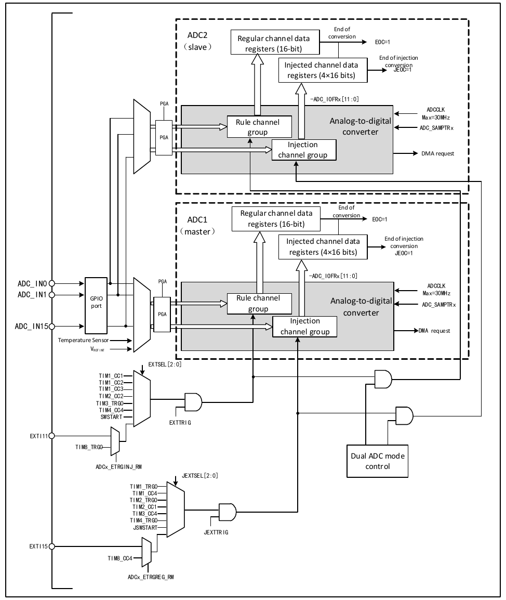
1) Independent mode
In this mode, the dual ADCs do not operate synchronously; each works independently.
2) Synchronous injection mode
This mode is used to convert an injected channel group. Set JEXTSEL[2:0] in ADC1_CTLR2 to select the trigger source, which is also used to synchronously trigger ADC2. When the conversion is complete, the converted data is stored in ADCx_IDATARx of each ADC, and if any ADC interrupt is enabled, a JEOC interrupt is generated after the conversion ends.
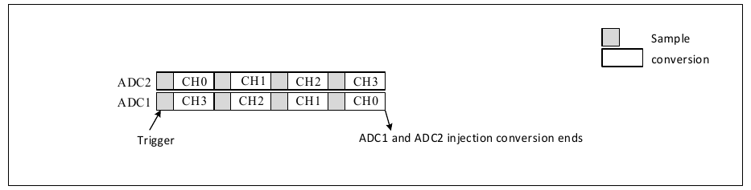
3) Synchronous regular mode
This mode is used to convert a regular channel sequence. Set EXTSEL[2:0] in ADC1_CTLR2 to select the trigger source, which is also used to synchronously trigger ADC2. When the conversion is complete, a 32-bit DMA transfer request is generated to transfer the contents of the data register ADC1_RDATAR to SRAM. The upper 16 bits contain the ADC2 conversion data, and the lower 16 bits contain the ADC1 conversion data. If any ADC interrupt is enabled, an EOC interrupt is generated.
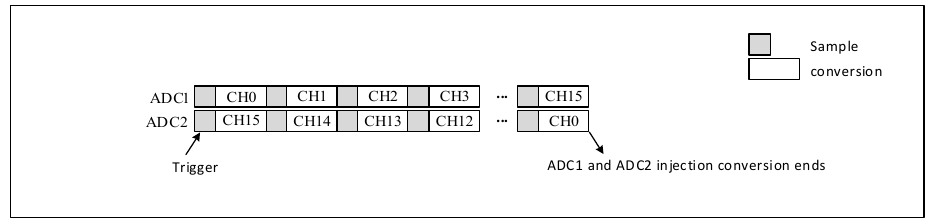
4) Fast alternate mode
This mode is only applicable to regular channels (typically only one channel). Set EXTSEL[2:0] in ADC1_CTLR2 to select the trigger source. When a trigger is generated, ADC2 starts conversion immediately, and ADC1 starts conversion after a delay of 7 ADC clock cycles. If continuous mode is enabled for both (CONT set), the two ADCs will continuously alternate conversion on the regular channel. If interrupts are enabled, ADC1 generates an EOC interrupt. If DMA is also enabled, a 32-bit DMA transfer request is generated to transfer the contents of the data register ADC1_RDATAR to SRAM. The upper 16 bits contain the ADC2 conversion data, and the lower 16 bits contain the ADC1 conversion data.
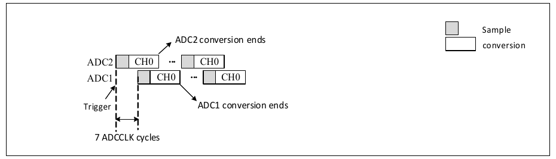
5) Slow alternate mode
This mode is only applicable to regular channels and only one channel. Set EXTSEL[2:0] in ADC1_CTLR2 to select the trigger source. When a trigger is generated, ADC2 starts conversion immediately, and ADC1 starts conversion after a delay of 14 ADC clock cycles. After another delay of 14 ADC clock cycles, ADC2 starts again, and so on in a cycle. If interrupts are enabled, ADC1 generates an EOC interrupt. If DMA is also enabled, a 32-bit DMA transfer request is generated to transfer the contents of the data register ADC1_RDATAR to SRAM. The upper 16 bits contain the ADC2 conversion data, and the lower 16 bits contain the ADC1 conversion data.
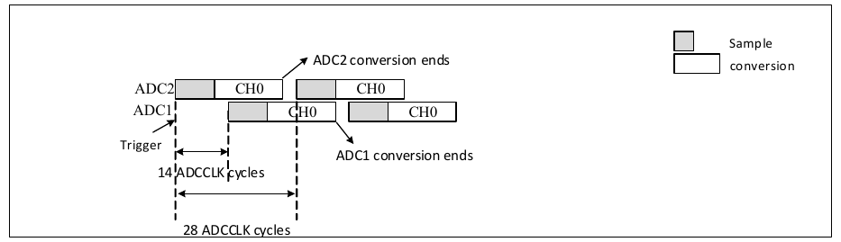
6) Alternating trigger mode
This mode is only applicable to injected channel groups. Set JEXTSEL[2:0] in ADC1_CTLR2 to select the trigger source. When the first trigger event occurs, all injected channels on ADC1 are converted. When the second trigger event occurs, all injected channels on ADC2 are converted. This alternates in a cycle. If interrupts are enabled, a JEOC interrupt is generated when all injected channels of ADC1 have completed conversion, and a JEOC interrupt is generated when all injected channels of ADC2 have completed conversion.
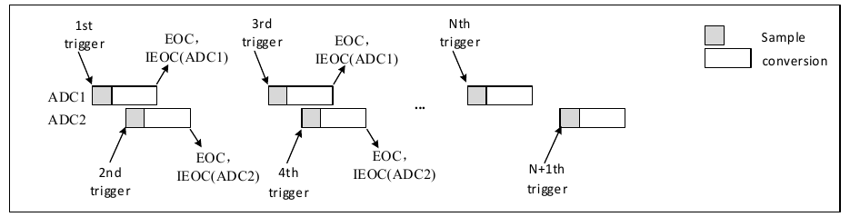
If injected discontinuous mode is used simultaneously, when the first trigger event occurs, the first injected channel on ADC1 is converted. When the second trigger event occurs, the first injected channel on ADC2 is converted. This alternates in a cycle. If interrupts are enabled, a JEOC interrupt is generated when all injected channels of ADC1 have completed conversion, and a JEOC interrupt is generated when all injected channels of ADC2 have completed conversion.
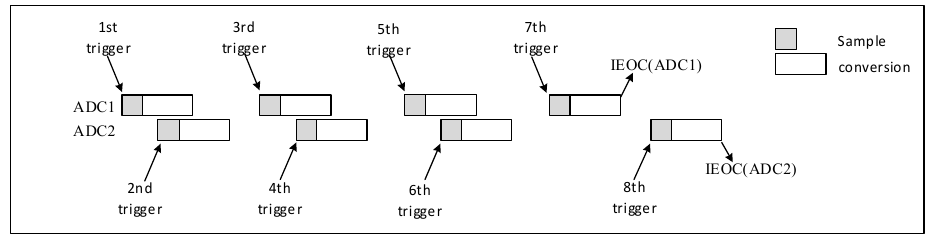
7) Synchronous regular mode + synchronous injection mode
In this mode, the synchronous conversion of the regular group can be interrupted to start the synchronous conversion of the injected group. This mode requires that the conversions have sequences of the same time length, or that the trigger time interval is longer than the time of the longer sequence of the two.
8) Synchronous regular mode + alternating trigger mode
In this mode, the synchronous conversion of the regular group can be interrupted to start the alternating trigger conversion of the injected group. When an injection event occurs, the alternating trigger conversion starts immediately. If synchronous regular conversion is in progress, the regular conversion of all ADCs is stopped and synchronously resumes after the injected conversion ends.
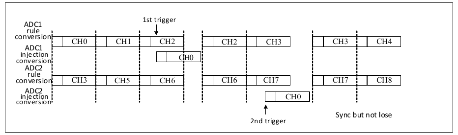
If an injected trigger event occurs during an injected conversion that has already interrupted a regular conversion, the trigger event is ignored, as shown in the figure below for the 2nd trigger.
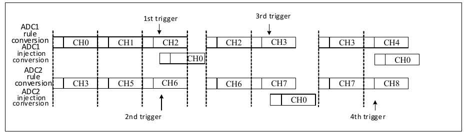
9) Synchronous injection mode + alternate mode
In this mode, the injected conversion can interrupt the alternate conversion. When an injection event occurs, the alternate conversion is interrupted and the injected conversion starts. After the injected conversion ends, the alternate conversion is resumed.
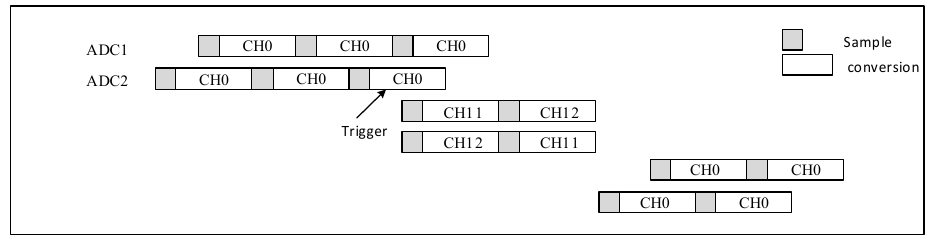
| Name | Address | Description | Reset Value |
|---|---|---|---|
| R32_ADC1_STATR | 0x40012400 | ADC1 status register | 0x00000000 |
| R32_ADC1_CTLR1 | 0x40012404 | ADC1 control register 1 | 0x00000000 |
| R32_ADC1_CTLR2 | 0x40012408 | ADC1 control register 2 | 0x00000000 |
| R32_ADC1_SAMPTR1 | 0x4001240C | ADC1 sampling time configuration register 1 | 0x00000000 |
| R32_ADC1_SAMPTR2 | 0x40012410 | ADC1 sampling time configuration register 2 | 0x00000000 |
| R32_ADC1_IOFR1 | 0x40012414 | ADC1 injected channel data offset register 1 | 0x00000000 |
| R32_ADC1_IOFR2 | 0x40012418 | ADC1 injected channel data offset register 2 | 0x00000000 |
| R32_ADC1_IOFR3 | 0x4001241C | ADC1 injected channel data offset register 3 | 0x00000000 |
| R32_ADC1_IOFR4 | 0x40012420 | ADC1 injected channel data offset register 4 | 0x00000000 |
| R32_ADC1_WDHTR | 0x40012424 | ADC1 watchdog high threshold register | 0x00000FFF |
| R32_ADC1_WDLTR | 0x40012428 | ADC1 watchdog low threshold register | 0x00000000 |
| R32_ADC1_RSQR1 | 0x4001242C | ADC1 regular channel sequence register 1 | 0x00000000 |
| R32_ADC1_RSQR2 | 0x40012430 | ADC1 regular channel sequence register 2 | 0x00000000 |
| R32_ADC1_RSQR3 | 0x40012434 | ADC1 regular channel sequence register 3 | 0x00000000 |
| R32_ADC1_ISQR | 0x40012438 | ADC1 injected channel sequence register | 0x00000000 |
| R32_ADC1_IDATAR1 | 0x4001243C | ADC1 injected data register 1 | 0x00000000 |
| R32_ADC1_IDATAR2 | 0x40012440 | ADC1 injected data register 2 | 0x00000000 |
| R32_ADC1_IDATAR3 | 0x40012444 | ADC1 injected data register 3 | 0x00000000 |
| R32_ADC1_IDATAR4 | 0x40012448 | ADC1 injected data register 4 | 0x00000000 |
| R32_ADC1_RDATAR | 0x4001244C | ADC1 regular data register | 0x00000000 |
| R32_ADC1_AUX | 0x40012454 | ADC1 sampling time register | 0x00000000 |
| Name | Address | Description | Reset Value |
|---|---|---|---|
| R32_ADC2_STATR | 0x40012800 | ADC2 status register | 0x00000000 |
| R32_ADC2_CTLR1 | 0x40012804 | ADC2 control register 1 | 0x00000000 |
| R32_ADC2_CTLR2 | 0x40012808 | ADC2 control register 2 | 0x00000000 |
| R32_ADC2_SAMPTR1 | 0x4001280C | ADC2 sampling time configuration register 1 | 0x00000000 |
| R32_ADC2_SAMPTR2 | 0x40012810 | ADC2 sampling time configuration register 2 | 0x00000000 |
| R32_ADC2_IOFR1 | 0x40012814 | ADC2 injected channel data offset register 1 | 0x00000000 |
| R32_ADC2_IOFR2 | 0x40012818 | ADC2 injected channel data offset register 2 | 0x00000000 |
| R32_ADC2_IOFR3 | 0x4001281C | ADC2 injected channel data offset register 3 | 0x00000000 |
| R32_ADC2_IOFR4 | 0x40012820 | ADC2 injected channel data offset register 4 | 0x00000000 |
| R32_ADC2_WDHTR | 0x40012824 | ADC2 watchdog high threshold register | 0x00000FFF |
| R32_ADC2_WDLTR | 0x40012828 | ADC2 watchdog low threshold register | 0x00000000 |
| R32_ADC2_RSQR1 | 0x4001282C | ADC2 regular channel sequence register 1 | 0x00000000 |
| R32_ADC2_RSQR2 | 0x40012830 | ADC2 regular channel sequence register 2 | 0x00000000 |
| R32_ADC2_RSQR3 | 0x40012834 | ADC2 regular channel sequence register 3 | 0x00000000 |
| R32_ADC2_ISQR | 0x40012838 | ADC2 injected channel sequence register | 0x00000000 |
| R32_ADC2_IDATAR1 | 0x4001283C | ADC2 injected data register 1 | 0x00000000 |
| R32_ADC2_IDATAR2 | 0x40012840 | ADC2 injected data register 2 | 0x00000000 |
| R32_ADC2_IDATAR3 | 0x40012844 | ADC2 injected data register 3 | 0x00000000 |
| R32_ADC2_IDATAR4 | 0x40012848 | ADC2 injected data register 4 | 0x00000000 |
| R32_ADC2_RDATAR | 0x4001284C | ADC2 regular data register | 0x00000000 |
| R32_ADC2_AUX | 0x40012854 | ADC2 sampling time register | 0x00000000 |
Offset address: 0x00
| 31 | 30 | 29 | 28 | 27 | 26 | 25 | 24 | 23 | 22 | 21 | 20 | 19 | 18 | 17 | 16 |
| RSTN | Reserved | ||||||||||||||
| 15 | 14 | 13 | 12 | 11 | 10 | 9 | 8 | 7 | 6 | 5 | 4 | 3 | 2 | 1 | 0 |
| Reserved | STRT | JSTRT | JEOC | EOC | AWD | ||||||||||
| Bits | Name | Access | Description | Reset |
|---|---|---|---|---|
| 31 | RSTN | RO | ADC module reset flag: 1: ADC module is in reset released state; 0: ADC module is in reset state. |
0 |
| [30:5] | Reserved | RO | Reserved. | 0 |
| 4 | STRT | RW0 | Regular channel conversion start status: 1: Regular channel conversion has started; 0: Regular channel conversion has not started. This bit is set to 1 by hardware and cleared to 0 by software (writing 1 has no effect). |
0 |
| 3 | JSTRT | RW0 | Injected channel conversion start status: 1: Injected channel conversion has started; 0: Injected channel conversion has not started. This bit is set to 1 by hardware and cleared to 0 by software (writing 1 has no effect). |
0 |
| 2 | JEOC | RW0 | Injected channel group conversion end status: 1: Conversion complete; 0: Conversion not complete. This bit is set to 1 by hardware (when all injected channels have been converted) and cleared to 0 by software (writing 1 has no effect). |
0 |
| 1 | EOC | RW0 | Conversion end status: 1: Conversion complete; 0: Conversion not complete. This bit is set to 1 by hardware (when regular or injected channel group conversion ends) and cleared to 0 by software (writing 1 has no effect) or by reading ADCx_RDATAR. |
0 |
| 0 | AWD | RW0 | Analog watchdog flag bit: 1: Analog watchdog event occurred; 0: No analog watchdog event occurred. This bit is set to 1 by hardware (when the converted value exceeds the range of the ADCx_WDHTR and ADCx_WDLTR registers) and cleared to 0 by software (writing 1 has no effect). |
0 |
Offset address: 0x04
| 31 | 30 | 29 | 28 | 27 | 26 | 25 | 24 | 23 | 22 | 21 | 20 | 19 | 18 | 17 | 16 |
| SW_PRE | ANA_RST | Reserved | AWDEN | JAWDEN | Reserved | DUALMOD[3:0] | |||||||||
| 15 | 14 | 13 | 12 | 11 | 10 | 9 | 8 | 7 | 6 | 5 | 4 | 3 | 2 | 1 | 0 |
| DISCNUM[2:0] | JDISCEN | DISCEN | JAUTO | AWDSGL | SCAN | JEOCIE | AWDIE | EOCIE | AWDCH[4:0] | ||||||
| Bits | Name | Access | Description | Reset |
|---|---|---|---|---|
| 31 | SW_PRE | RW | Channel pre-switching off: 1: Channel pre-switching off; 0: Channel pre-switching on. |
0 |
| 30 | ANA_RST | RW | Analog module reset enable: 1: Enable; 0: Disable. Note: Resetting the ADC analog circuit during ADC conversion will corrupt the conversion results. This bit can be used together with RCC's ADCxRST. |
0 |
| [29:24] | Reserved | RO | Reserved. | 0 |
| 23 | AWDEN | RW | Analog watchdog enable on regular channels: 1: Enable analog watchdog on regular channels; 0: Disable analog watchdog on regular channels. |
0 |
| 22 | JAWDEN | RW | Analog watchdog enable on injected channels: 1: Enable analog watchdog on injected channels; 0: Disable analog watchdog on injected channels. |
0 |
| [21:20] | Reserved | RO | Reserved. | 0 |
| [19:16] | DUALMOD[3:0] | RW | Dual mode selection. 0000: Independent mode 0001: Synchronous regular + synchronous injection mode 0010: Synchronous regular + alternating trigger mode 0011: Synchronous injection + fast alternate mode 0100: Synchronous injection + slow alternate mode 0101: Synchronous injection mode 0110: Synchronous regular mode 0111: Fast alternate mode 1000: Slow alternate mode 1001: Alternating trigger mode Note: These bits are reserved in ADC2. Any configuration bit modifications should be performed while dual mode is disabled. |
0000b |
| [15:13] | DISCNUM[2:0] | RW | Number of regular channels to be converted after an external trigger in discontinuous mode: 000: 1 channel; ... 111: 8 channels. |
000b |
| 12 | JDISCEN | RW | Discontinuous mode enable on injected channels: 1: Enable discontinuous mode on injected channels; 0: Disable discontinuous mode on injected channels. |
0 |
| 11 | DISCEN | RW | Discontinuous mode enable on regular channels: 1: Enable discontinuous mode on regular channels; 0: Disable discontinuous mode on regular channels. |
0 |
| 10 | JAUTO | RW | Automatic injected channel group conversion enable after regular channel conversion completes: 1: Enable automatic injected channel group conversion; 0: Disable automatic injected channel group conversion. Note: This mode requires disabling the external trigger function of injected channels. |
0 |
| 9 | AWDSGL | RW | Analog watchdog enable on a single channel in scan mode: 1: Use analog watchdog on a single channel (selected by AWDCH[4:0]); 0: Use analog watchdog on all channels. |
0 |
| 8 | SCAN | RW | Scan mode enable: 1: Enable scan mode (continuously convert all channels selected by ADCx_IOFRx and ADCx_RSQRx); 0: Disable scan mode. |
0 |
| 7 | JEOCIE | RW | Injected channel group conversion end interrupt enable: 1: Enable injected channel group conversion complete interrupt (JEOC flag); 0: Disable injected channel group conversion complete interrupt. |
0 |
| 6 | AWDIE | RW | Analog watchdog interrupt enable: 1: Enable analog watchdog interrupt; 0: Disable analog watchdog interrupt. Note: In scan mode, if this interrupt occurs, the scan will be aborted. |
0 |
| 5 | EOCIE | RW | Conversion end (regular or injected channel group) interrupt enable: 1: Enable conversion end interrupt (EOC flag); 0: Disable conversion end interrupt. |
0 |
| [4:0] | AWDCH[4:0] | RW | Analog watchdog channel selection: 00000: Analog input channel 0; 00001: Analog input channel 1; ... 10000: Analog input channel 16; 10001: Analog input channel 17; Others: Reserved. |
00000b |
Offset address: 0x08
| 31 | 30 | 29 | 28 | 27 | 26 | 25 | 24 | 23 | 22 | 21 | 20 | 19 | 18 | 17 | 16 |
| Reserved | TSVREFE | RSWSTART | JSWSTART | EXTTRIG | EXTSEL[2:0] | Reserved | |||||||||
| 15 | 14 | 13 | 12 | 11 | 10 | 9 | 8 | 7 | 6 | 5 | 4 | 3 | 2 | 1 | 0 |
| JEXTTRIG | JEXTSEL[2:0] | ALIGN | Reserved | DMA | Reserved | RSTCAL | CAL | CONT | ADON | ||||||
| Bits | Name | Access | Description | Reset |
|---|---|---|---|---|
| [31:24] | Reserved | RO | Reserved. | 0 |
| 23 | TSVREFE | RW | Temperature sensor and internal voltage (VREFINT) channel enable: 1: Enable temperature sensor and VREFINT channels; 0: Disable temperature sensor and VREFINT channels. Note: This bit is only applicable to ADC1. |
0 |
| 22 | RSWSTART | RW | Start a regular channel conversion, requires setting the software trigger: 1: Start regular channel conversion; 0: Reset state. This bit is set by software and cleared by hardware after conversion starts. |
0 |
| 21 | JSWSTART | RW | Start an injected channel conversion, requires setting the software trigger: 1: Start injected channel conversion; 0: Reset state. This bit is set by software and cleared by hardware after conversion starts or by software. |
0 |
| 20 | EXTTRIG | RW | External trigger conversion mode enable for regular channels: 1: Use external event to start conversion; 0: Disable external event start function. |
0 |
| [19:17] | EXTSEL[2:0] | RW | External trigger event selection for starting regular channel conversion: 000: Timer 1 CC1 event; 001: Timer 1 CC2 event; 010: Timer 1 CC3 event; 011: Timer 2 CC2 event; 100: Timer 3 TRGO event; 101: Timer 4 CC4 event; 110: EXTI line 11 / Timer 8 TRGO event; 111: SWSTART software trigger. |
000b |
| 16 | Reserved | RO | Reserved. | 0 |
| 15 | JEXTTRIG | RW | External trigger conversion mode enable for injected channels: 1: Use external event to start conversion; 0: Disable external event start function. |
0 |
| [14:12] | JEXTSEL[2:0] | RW | External trigger event selection for starting injected channel conversion: 000: Timer 1 TRGO event; 001: Timer 1 CC4 event; 010: Timer 2 TRGO event; 011: Timer 2 CC1 event; 100: Timer 3 CC4 event; 101: Timer 4 TRGO event; 110: EXTI line 15 / Timer 8 CC4 event; 111: JSWSTART software trigger. |
000b |
| 11 | ALIGN | RW | Data alignment: 1: Left-aligned; 0: Right-aligned. |
0 |
| [10:9] | Reserved | RO | Reserved. | 0 |
| 8 | DMA | RW | Direct memory access (DMA) mode enable: 1: Enable DMA mode; 0: Disable DMA mode. |
0 |
| [7:4] | Reserved | RO | Reserved. | 0 |
| 3 | RSTCAL | RW | Reset calibration. This bit is set by software and cleared by hardware when reset is complete: 1: Initialize calibration registers; 0: Calibration registers initialized. Note: If RSTCAL is set while a conversion is in progress, additional cycles are required to clear the calibration registers. |
0 |
| 2 | CAL | RW | A/D calibration. This bit is set by software and cleared by hardware when calibration ends. 1: Start calibration; 0: Calibration complete. |
0 |
| 1 | CONT | RW | Continuous conversion enable: 1: Continuous conversion mode; 0: Single conversion mode. If this bit is set, conversion will continue until this bit is cleared. |
0 |
| 0 | ADON | RW | On/off A/D converter. When this bit is 0, writing 1 wakes up the ADC from power-down mode; When this bit is 1, writing 1 starts conversion. If any other bits change, no new conversion is started. 1: Turn on ADC and start conversion; 0: Turn off ADC conversion/calibration and enter power-down mode. |
0 |
Offset address: 0x0C
| 31 | 30 | 29 | 28 | 27 | 26 | 25 | 24 | 23 | 22 | 21 | 20 | 19 | 18 | 17 | 16 |
| Reserved | SMP18[2:0] | SMP17[2:0] | SMP16[2:0] | SMP15[2:1] | |||||||||||
| 15 | 14 | 13 | 12 | 11 | 10 | 9 | 8 | 7 | 6 | 5 | 4 | 3 | 2 | 1 | 0 |
| SMP15[0] | SMP14[2:0] | SMP13[2:0] | SMP12[2:0] | SMP11[2:0] | SMP10[2:0] | ||||||||||
| Bits | Name | Access | Description | Reset |
|---|---|---|---|---|
| [31:27] | Reserved | RO | Reserved. | 0 |
| [26:0] | SMPx[2:0] | RW | SMPx[2:0]: Sampling time configuration for channel x: 000: 1.5 cycles; 001: 7.5 cycles; 010: 13.5 cycles; 011: 28.5 cycles; 100: 41.5 cycles; 101: 55.5 cycles; 110: 71.5 cycles; 111: 239.5 cycles; SMPx[2:0]: Sampling time configuration for channel x when ADC_SMP_SELx bit is set: 000: 1.5 cycles; 001: 7.5 cycles; 010: 13.5 cycles; 011: 28.5 cycles; 100: 2.5 cycles; 101: 3.5 cycles; 110: 4.5 cycles; 111: 5.5 cycles; These bits are used to independently select the sampling time for each channel. The channel configuration value must remain unchanged during the sampling period. |
000b |
Offset address: 0x10
| 31 | 30 | 29 | 28 | 27 | 26 | 25 | 24 | 23 | 22 | 21 | 20 | 19 | 18 | 17 | 16 |
| Reserved | SMP9[2:0] | SMP8[2:0] | SMP7[2:0] | SMP6[2:0] | SMP5[2:1] | ||||||||||
| 15 | 14 | 13 | 12 | 11 | 10 | 9 | 8 | 7 | 6 | 5 | 4 | 3 | 2 | 1 | 0 |
| SMP5[0] | SMP4[2:0] | SMP3[2:0] | SMP2[2:0] | SMP1[2:0] | SMP0[2:0] | ||||||||||
| Bits | Name | Access | Description | Reset |
|---|---|---|---|---|
| [31:30] | Reserved | RO | Reserved. | 0 |
| [29:0] | SMPx[2:0] | RW | SMPx[2:0]: Sampling time configuration for channel x: 000: 1.5 cycles; 001: 7.5 cycles; 010: 13.5 cycles; 011: 28.5 cycles; 100: 41.5 cycles; 101: 55.5 cycles; 110: 71.5 cycles; 111: 239.5 cycles; SMPx[2:0]: Sampling time configuration for channel x when ADC_SMP_SELx bit is set: 000: 1.5 cycles; 001: 7.5 cycles; 010: 13.5 cycles; 011: 28.5 cycles; 100: 2.5 cycles; 101: 3.5 cycles; 110: 4.5 cycles; 111: 5.5 cycles; These bits are used to independently select the sampling time for each channel. The channel configuration value must remain unchanged during the sampling period. |
000b |
Offset address: 0x14 + (x−1) × 4
| 31 | 30 | 29 | 28 | 27 | 26 | 25 | 24 | 23 | 22 | 21 | 20 | 19 | 18 | 17 | 16 |
| Reserved | |||||||||||||||
| 15 | 14 | 13 | 12 | 11 | 10 | 9 | 8 | 7 | 6 | 5 | 4 | 3 | 2 | 1 | 0 |
| Reserved | JOFFSETx[11:0] | ||||||||||||||
| Bits | Name | Access | Description | Reset |
|---|---|---|---|---|
| [31:12] | Reserved | RO | Reserved. | 0 |
| [11:0] | JOFFSETx[11:0] | RW | Data offset value for injected channel x. When converting an injected channel, this value defines the value to be subtracted from the raw conversion data. The conversion result can be read from the ADCx_IDATARx register. |
0 |
Offset address: 0x24
| 31 | 30 | 29 | 28 | 27 | 26 | 25 | 24 | 23 | 22 | 21 | 20 | 19 | 18 | 17 | 16 |
| Reserved | |||||||||||||||
| 15 | 14 | 13 | 12 | 11 | 10 | 9 | 8 | 7 | 6 | 5 | 4 | 3 | 2 | 1 | 0 |
| Reserved | HT[11:0] | ||||||||||||||
| Bits | Name | Access | Description | Reset |
|---|---|---|---|---|
| [31:12] | Reserved | RO | Reserved. | 0 |
| [11:0] | HT[11:0] | RW | Analog watchdog high threshold setting value. | 0xFFF |
Offset address: 0x28
| 31 | 30 | 29 | 28 | 27 | 26 | 25 | 24 | 23 | 22 | 21 | 20 | 19 | 18 | 17 | 16 |
| Reserved | |||||||||||||||
| 15 | 14 | 13 | 12 | 11 | 10 | 9 | 8 | 7 | 6 | 5 | 4 | 3 | 2 | 1 | 0 |
| Reserved | LT[11:0] | ||||||||||||||
| Bits | Name | Access | Description | Reset |
|---|---|---|---|---|
| [31:12] | Reserved | RO | Reserved. | 0 |
| [11:0] | LT[11:0] | RW | Analog watchdog low threshold setting value. | 0 |
Offset address: 0x2C
| 31 | 30 | 29 | 28 | 27 | 26 | 25 | 24 | 23 | 22 | 21 | 20 | 19 | 18 | 17 | 16 |
| Reserved | L[3:0] | SQ16[4:1] | |||||||||||||
| 15 | 14 | 13 | 12 | 11 | 10 | 9 | 8 | 7 | 6 | 5 | 4 | 3 | 2 | 1 | 0 |
| SQ16[0] | SQ15[4:0] | SQ14[4:0] | SQ13[4:0] | ||||||||||||
| Bits | Name | Access | Description | Reset |
|---|---|---|---|---|
| [31:24] | Reserved | RO | Reserved. | 0 |
| [23:20] | L[3:0] | RW | Number of channels to be converted in the regular channel conversion sequence: 0000–1111: 1–16 conversions. |
0 |
| [19:15] | SQ16[4:0] | RW | Channel number (0–17) for the 16th conversion in the regular sequence. | 0 |
| [14:10] | SQ15[4:0] | RW | Channel number (0–17) for the 15th conversion in the regular sequence. | 0 |
| [9:5] | SQ14[4:0] | RW | Channel number (0–17) for the 14th conversion in the regular sequence. | 0 |
| [4:0] | SQ13[4:0] | RW | Channel number (0–17) for the 13th conversion in the regular sequence. | 0 |
Offset address: 0x30
| 31 | 30 | 29 | 28 | 27 | 26 | 25 | 24 | 23 | 22 | 21 | 20 | 19 | 18 | 17 | 16 |
| Reserved | SQ12[4:0] | SQ11[4:0] | SQ10[4:1] | ||||||||||||
| 15 | 14 | 13 | 12 | 11 | 10 | 9 | 8 | 7 | 6 | 5 | 4 | 3 | 2 | 1 | 0 |
| SQ10[0] | SQ9[4:0] | SQ8[4:0] | SQ7[4:0] | ||||||||||||
| Bits | Name | Access | Description | Reset |
|---|---|---|---|---|
| [31:30] | Reserved | RO | Reserved. | 0 |
| [29:25] | SQ12[4:0] | RW | Channel number (0–17) for the 12th conversion in the regular sequence. | 0 |
| [24:20] | SQ11[4:0] | RW | Channel number (0–17) for the 11th conversion in the regular sequence. | 0 |
| [19:15] | SQ10[4:0] | RW | Channel number (0–17) for the 10th conversion in the regular sequence. | 0 |
| [14:10] | SQ9[4:0] | RW | Channel number (0–17) for the 9th conversion in the regular sequence. | 0 |
| [9:5] | SQ8[4:0] | RW | Channel number (0–17) for the 8th conversion in the regular sequence. | 0 |
| [4:0] | SQ7[4:0] | RW | Channel number (0–17) for the 7th conversion in the regular sequence. | 0 |
Offset address: 0x34
| 31 | 30 | 29 | 28 | 27 | 26 | 25 | 24 | 23 | 22 | 21 | 20 | 19 | 18 | 17 | 16 |
| Reserved | SQ6[4:0] | SQ5[4:0] | SQ4[4:1] | ||||||||||||
| 15 | 14 | 13 | 12 | 11 | 10 | 9 | 8 | 7 | 6 | 5 | 4 | 3 | 2 | 1 | 0 |
| SQ4[0] | SQ3[4:0] | SQ2[4:0] | SQ1[4:0] | ||||||||||||
| Bits | Name | Access | Description | Reset |
|---|---|---|---|---|
| [31:30] | Reserved | RO | Reserved. | 0 |
| [29:25] | SQ6[4:0] | RW | Channel number (0–17) for the 6th conversion in the regular sequence. | 0 |
| [24:20] | SQ5[4:0] | RW | Channel number (0–17) for the 5th conversion in the regular sequence. | 0 |
| [19:15] | SQ4[4:0] | RW | Channel number (0–17) for the 4th conversion in the regular sequence. | 0 |
| [14:10] | SQ3[4:0] | RW | Channel number (0–17) for the 3rd conversion in the regular sequence. | 0 |
| [9:5] | SQ2[4:0] | RW | Channel number (0–17) for the 2nd conversion in the regular sequence. | 0 |
| [4:0] | SQ1[4:0] | RW | Channel number (0–17) for the 1st conversion in the regular sequence. | 0 |
Offset address: 0x38
| 31 | 30 | 29 | 28 | 27 | 26 | 25 | 24 | 23 | 22 | 21 | 20 | 19 | 18 | 17 | 16 |
| Reserved | JL[1:0] | JSQ4[4:1] | |||||||||||||
| 15 | 14 | 13 | 12 | 11 | 10 | 9 | 8 | 7 | 6 | 5 | 4 | 3 | 2 | 1 | 0 |
| JSQ4[0] | JSQ3[4:0] | JSQ2[4:0] | JSQ1[4:0] | ||||||||||||
| Bits | Name | Access | Description | Reset |
|---|---|---|---|---|
| [31:22] | Reserved | RO | Reserved. | 0 |
| [21:20] | JL[1:0] | RW | Number of channels to be converted in the injected channel conversion sequence: 00–11: 1–4 conversions. |
0 |
| [19:15] | JSQ4[4:0] | RW | Channel number (0–17) for the 4th conversion in the injected sequence. Note: Written by software to assign channel number (0–17) as the 4th in the sequence to be converted. |
0 |
| [14:10] | JSQ3[4:0] | RW | Channel number (0–17) for the 3rd conversion in the injected sequence. | 0 |
| [9:5] | JSQ2[4:0] | RW | Channel number (0–17) for the 2nd conversion in the injected sequence. | 0 |
| [4:0] | JSQ1[4:0] | RW | Channel number (0–17) for the 1st conversion in the injected sequence. | 0 |
Offset address: 0x3C + (x−1) × 4
| 31 | 30 | 29 | 28 | 27 | 26 | 25 | 24 | 23 | 22 | 21 | 20 | 19 | 18 | 17 | 16 |
| Reserved | |||||||||||||||
| 15 | 14 | 13 | 12 | 11 | 10 | 9 | 8 | 7 | 6 | 5 | 4 | 3 | 2 | 1 | 0 |
| JDATA[15:0] | |||||||||||||||
| Bits | Name | Access | Description | Reset |
|---|---|---|---|---|
| [31:16] | Reserved | RO | Reserved. | 0 |
| [15:0] | JDATA[15:0] | RO | Injected channel conversion data (data left-aligned or right-aligned). | 0 |
Offset address: 0x4C
| 31 | 30 | 29 | 28 | 27 | 26 | 25 | 24 | 23 | 22 | 21 | 20 | 19 | 18 | 17 | 16 |
| ADC2DATA[15:0] | |||||||||||||||
| 15 | 14 | 13 | 12 | 11 | 10 | 9 | 8 | 7 | 6 | 5 | 4 | 3 | 2 | 1 | 0 |
| DATA[15:0] | |||||||||||||||
| Bits | Name | Access | Description | Reset |
|---|---|---|---|---|
| [31:16] | ADC2DATA[15:0] | RO | ADC2 converted data: In ADC1: In dual mode, these bits contain the regular channel data converted by ADC2. In ADC2: These bits are not used. |
0 |
| [15:0] | DATA[15:0] | RO | Regular channel conversion data (data left-aligned or right-aligned). | 0 |
Offset address: 0x54
| 31 | 30 | 29 | 28 | 27 | 26 | 25 | 24 | 23 | 22 | 21 | 20 | 19 | 18 | 17 | 16 |
| Reserved | ADC_SMP_SEL17 | ADC_SMP_SEL16 | |||||||||||||
| 15 | 14 | 13 | 12 | 11 | 10 | 9 | 8 | 7 | 6 | 5 | 4 | 3 | 2 | 1 | 0 |
| ADC_SMP_SEL15 | ADC_SMP_SEL14 | ADC_SMP_SEL13 | ADC_SMP_SEL12 | ADC_SMP_SEL11 | ADC_SMP_SEL10 | ADC_SMP_SEL9 | ADC_SMP_SEL8 | ADC_SMP_SEL7 | ADC_SMP_SEL6 | ADC_SMP_SEL5 | ADC_SMP_SEL4 | ADC_SMP_SEL3 | ADC_SMP_SEL2 | ADC_SMP_SEL1 | ADC_SMP_SEL0 |
| Bits | Name | Access | Description | Reset |
|---|---|---|---|---|
| [31:18] | Reserved | R0 | Reserved. | 0 |
| [17:0] | ADC_SMP_SELx | RW | x=0–17, sampling time optional enable bit for channel x (only when SMPx is 100–111): 1: SMPx=100: sampling time 2.5 cycles; SMPx=101: sampling time 3.5 cycles; SMPx=110: sampling time 4.5 cycles; SMPx=111: sampling time 5.5 cycles; 0: Sampling time is the period corresponding to the SMPx configuration. |
0 |